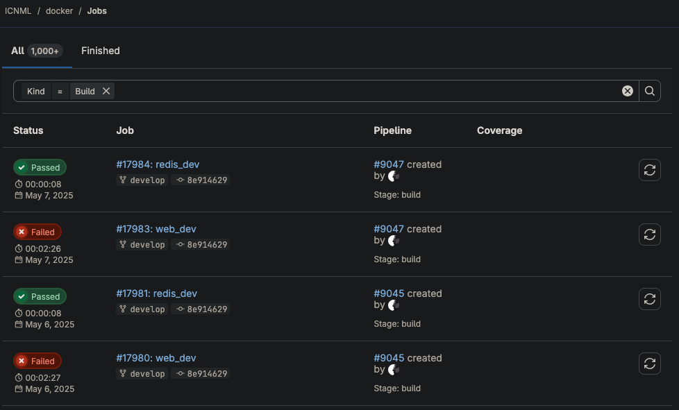
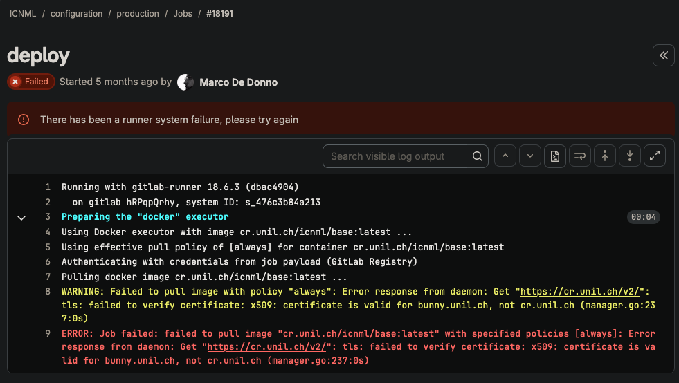

ICNML · Bachelor Thesis
Development
Focus Points
Quentin Surdez
HEIG-VD · 2025-2026
Current State
- Broken CI/CD pipeline, no new development possible
- Python 2.7 end-of-life: security and technical debt, libraries with known CVEs
- Images served without watermark or steganography, easy to copy
- Existing watermark easily bypassed, not resilient to image transformation
- Dead code: unused roles, non-functional PiAnoS integration
- Cryptography layer is obscure, hard to reason about and uses old algo (AES-CBC)
- Poor ergonomics, app not actively used by researchers today


1. Sound Deployment ~3-4 days
-
Redeploy to a new machine controlled by the ESC IT service
Replace Docker Swarm with a simple
docker compose
-
Configure reverse proxy and import production database
Locate and copy the private GPG key (unknown effort)
-
Store custom dependencies (MDmisc, NIST…) in the ESC GitLab
Currently only available on one machine, ~1-2 hours
-
Upgrade Python version to 3.9+ to unlock modern, CVE-free libraries
Effort not yet estimated
2. Watermarking per Downloader ~5 days
- Embed a unique, per-user mark in every downloaded image
- Maintain a download history: who downloaded which images and when
-
Encode a secret code into the watermark tied to the requester's email
Allows for traceability if a leaked image is found
3. Access Logs for Images ~5 days
- Record every access: user ID + object ID + timestamp
- Provides an audit trail for all image requests
- Significant undertaking, scope to be discussed
4. Steganography on All Images ~10 days
-
Research state-of-the-art steganography robust to image transformation
Review literature, define scope with supervisor
- Embed a hidden per-user trace in every served image
-
Goal: traceability that survives cropping, compression, and format conversion
~10 days for research + implementation
5. User Experience ~7 days
-
Focus on the Trainer role, most actively used today
Remove image from folder, delete a folder, ~2 days
-
Quality-based filtering
Automatic quality detection + search/filter by print quality, ~5 days
- Goal: make the platform usable enough that researchers actually adopt it
Planning
2
Watermarking per Downloader
5d
3
Access Logs for Images
5d
4
Steganography on All Images
10d
Total
30 days estimated
/ 27 available
Scope selection needed, not all focus areas fit within the available timeline.